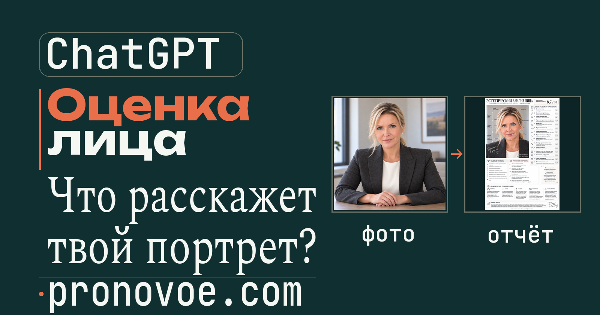
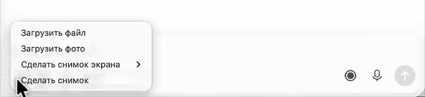
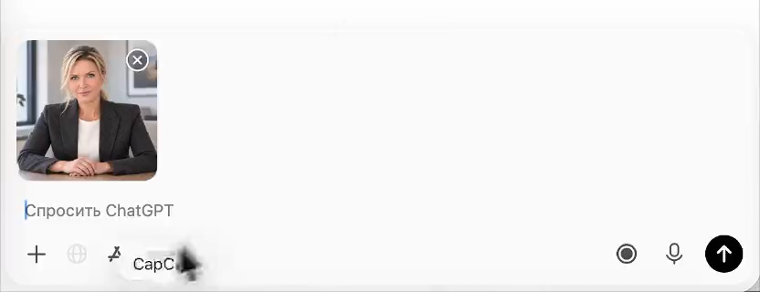
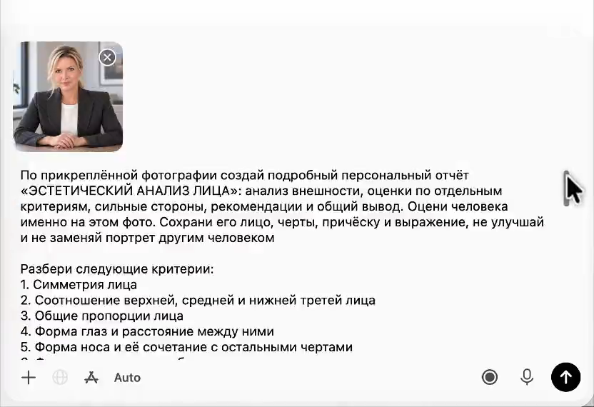
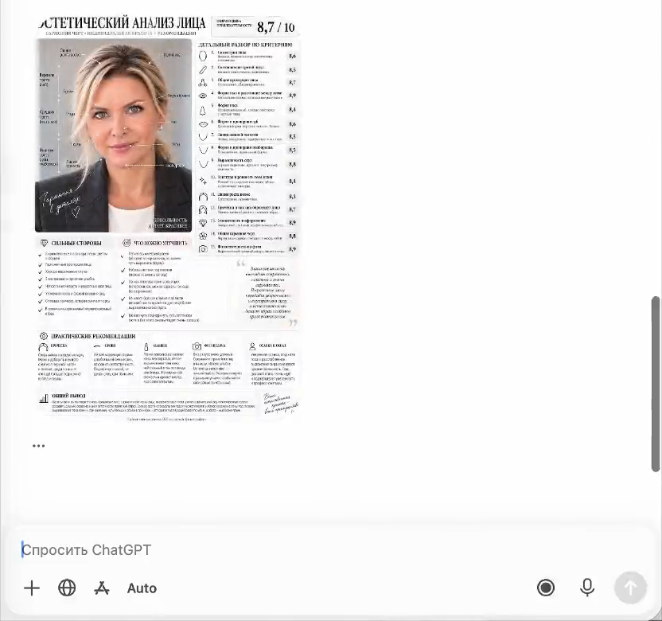
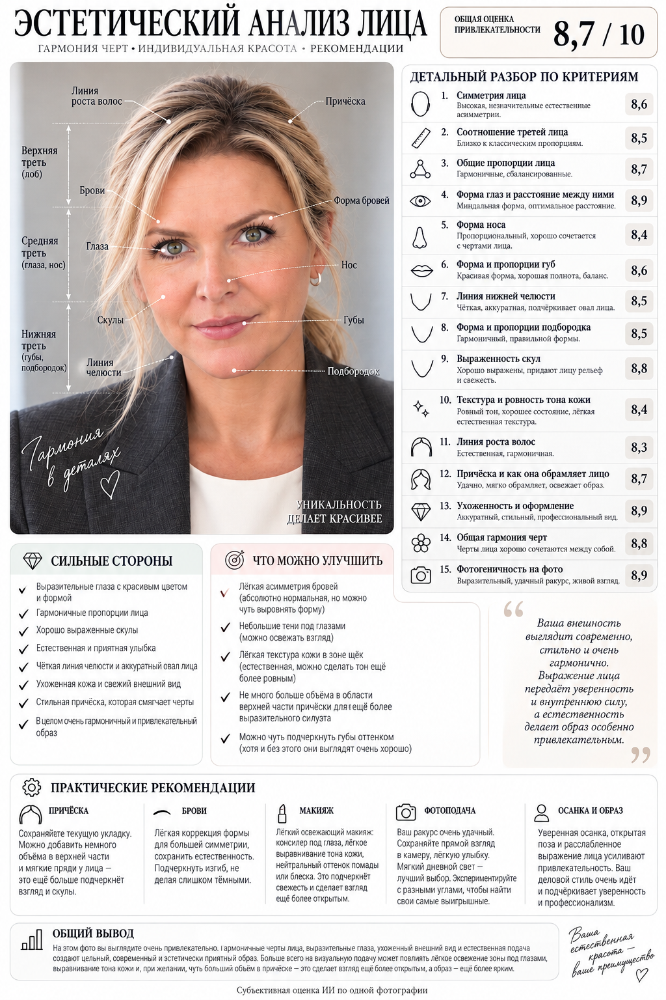
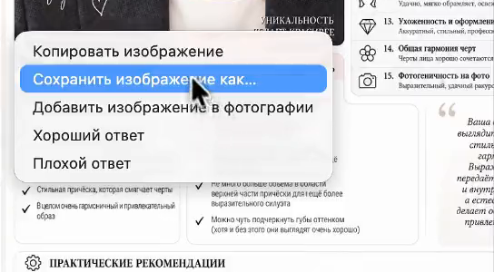

Оценка внешности по фото в ChatGPT: 15 критериев и балл из 10
Хочется понять, как выглядишь на фото со стороны, а спросить некого или ответят из вежливости? Один промпт просит ChatGPT разобрать портрет по 15 критериям и собрать сильные стороны, рекомендации и итоговый балл из 10 на одной картинке. Ниже полный запрос и пример отчёта. А в конце допишешь свою задачу, чтобы спросить, что менять в кадре для резюме или страницы проекта.
Загрузить фото и создать картинку можно без подписки, в пределах лимитов Free. Справка OpenAI, условия на 10.10.2026.
Содержание статьи
Как устроена оценка внешности по фото
ChatGPT - это нейросеть, с которой можно переписываться на сайте. Ты отправляешь фото и промпт, то есть текст задания. ChatGPT рассматривает снимок и создаёт картинку-отчёт: рядом с портретом стоят наблюдения, оценки и советы. Такая картинка с разбором называется инфографикой. Как ChatGPT читает фотографии и как создаёт изображения.
Разбор относится к одному снимку. На другом фото, при другом свете или ракурсе оценка может отличаться. Число с десятичной запятой выглядит точным, но это субъективное впечатление нейросети. Промпт просит объяснить балл и не оценивать то, чего в кадре не видно.
Оценка не медицинская и не научная. Она не определяет здоровье, характер или ценность человека. Фразы о «внутренней силе» в примере ниже тоже относятся к впечатлению от картинки. Чужое фото загружай только с согласия человека на нём. OpenAI предупреждает, что описание изображения может содержать ошибки.
Что нужно до начала
- Аккаунт ChatGPT. Ниже маршрут на сайте chatgpt.com. На кадрах показана программа ChatGPT для Mac, поэтому название пункта загрузки отличается.
- Один портрет. Выбери снимок, на котором видно лицо. Если часть лица закрыта, промпт просит отметить это вместо выдуманной оценки.
- Файл фото. ChatGPT принимает PNG, JPEG и неподвижный GIF; размер одного изображения до 20 МБ. Форматы и размер фото в справке OpenAI.
Шаг 1. Открой ChatGPT
Открой chatgpt.com и войди в аккаунт. Если аккаунта ещё нет, выбери регистрацию и пройди подсказки сайта. Начни новый чат через New chat («Новый чат»). Внизу находится поле сообщения, туда пойдут фото и текст задания. Как начать разговор в ChatGPT.
Результат: ты в новом чате своего аккаунта и можешь прикрепить фотографию.
Шаг 2. Загрузи фото
Нажми «+» у поля сообщения и выбери Add photos & files («Добавить фото и файлы»). Найди портрет на устройстве и прикрепи его. На показанном экране Mac пункт называется «Загрузить фото». Можно также перетащить файл в поле сообщения. Способы прикрепить изображение.


Результат: рядом с полем сообщения видна миниатюра твоего портрета.
Шаг 3. Вставь полный промпт
Нажми «Скопировать» на плашке ниже. Вернись в ChatGPT и вставь текст в поле сообщения рядом с прикреплённым фото: Ctrl+V на Windows или Cmd+V на Mac. Отправь сообщение кнопкой со стрелкой вверх. Фото и весь промпт должны уйти вместе.
По прикреплённой фотографии создай подробный персональный отчёт «ЭСТЕТИЧЕСКИЙ АНАЛИЗ ЛИЦА»: анализ внешности, оценки по отдельным критериям, сильные стороны, рекомендации и общий вывод. Оцени человека именно на этом фото. Сохрани его лицо, черты, причёску и выражение, не улучшай и не заменяй портрет другим человеком
Разбери следующие критерии:
1. Симметрия лица
2. Соотношение верхней, средней и нижней третей лица
3. Общие пропорции лица
4. Форма глаз и расстояние между ними
5. Форма носа и её сочетание с остальными чертами
6. Форма и пропорции губ
7. Линия нижней челюсти
8. Форма и пропорции подбородка
9. Выраженность скул
10. Видимая текстура и ровность тона кожи
11. Линия роста волос
12. Причёска и то, как она обрамляет лицо
13. Ухоженность и оформление внешности
14. Общая гармония черт
15. Фотогеничность на представленном снимке
По каждому критерию дай краткое наблюдение и свою оценку от 1 до 10 с одним знаком после запятой. Не задавай автоматически высокие баллы и не подгоняй вывод под желаемую оценку. Если какой-то критерий не виден из-за ракурса, света или закрытой части лица, прямо укажи это вместо выдуманной оценки
Отдельно составь блоки «Сильные стороны», «Что можно улучшить», «Практические рекомендации». Советы должны следовать из конкретных наблюдений: подходящая укладка и форма причёски, оформление бровей, макияж при необходимости, визуальная подача кожи, осанка, выражение лица и подача на фотографии. Для каждого совета объясни, какую особенность он подчёркивает или какую проблему кадра решает. Не делай медицинских выводов, не назначай процедуры и не выводи необходимость похудения по портрету
В конце дай общую субъективную оценку привлекательности от 1 до 10 и вывод из 2-3 предложений: какие черты определяют впечатление и какое из предложенных изменений сильнее всего повлияет на визуальную подачу. Объясни итоговый балл, он должен соответствовать разбору
Оформи результат как одну большую вертикальную журнальную инфографику на русском языке. Белый фон, чёрная типографика, крупный заголовок с засечками, аккуратный шрифт основного текста, тонкие линии, небольшие контурные иконки, карточки со скруглениями и достаточно свободного места. Слева крупный портрет по плечи с подписями вокруг лица и направляющими к соответствующим чертам. Обозначь верхнюю, среднюю и нижнюю трети лица. Справа размести оценки всех критериев, сверху справа крупно покажи итоговый балл /10. Под портретом размести сильные стороны и зоны для улучшения, в нижней части рекомендации и общий вывод
Весь текст должен быть читаемым, без наложений и обрезанных блоков. Используй столько высоты, сколько нужно для полного отчёта. Не сокращай список критериев ради компактной картинки. Внизу добавь короткую подпись «Субъективная оценка ИИ по одной фотографии». Создай саму инфографику, а не только описание её дизайна
Результат: в чате появилось твоё сообщение с фотографией и заданием на отчёт по 15 критериям.
Шаг 4. Дождись картинки с отчётом
Дождись изображения в ответе. Создание картинки может занять несколько минут. OpenAI о времени создания изображений. Вот пример по промпту выше: итог 8,7/10, справа все 15 критериев, ниже сильные стороны и рекомендации.


Баллы на этой картинке относятся к показанному фото. Твоему портрету ChatGPT может дать другой балл и другие рекомендации. Если текст мелкий, нажми «Открыть крупнее» на изображении. Здесь также доступен исходный отчёт в PNG.

Результат: в чате есть картинка с портретом, оценками и общим выводом. Если пришёл только текст, открой раздел «Если отчёт не появился».
Шаг 5. Открой отчёт крупнее и сохрани
Нажми на готовую картинку в ChatGPT. Откроется изображение с кнопками управления. Выбери Save («Сохранить»), чтобы скачать его на устройство. Как открыть и сохранить созданную картинку.
На кадре с Mac показан другой способ: нажать на изображение правой кнопкой и выбрать «Сохранить изображение как…». В окне сохранения выбери папку и подтверди сохранение.

Результат: файл с отчётом лежит в выбранной папке на устройстве и открывается отдельно от чата.
Сколько это стоит
Подписка для этого задания не обязательна. На тарифе Free («Без подписки») доступны загрузка фото и создание изображений. Возможности Free в справке OpenAI и сравнение тарифов ChatGPT. Проверка условий: 10.10.2026.
- Загрузка файлов на Free: до трёх в день. В часы высокой нагрузки OpenAI может уменьшить лимит. Лимиты загрузки файлов, проверка 10.10.2026.
- Создание картинок: отдельный лимит. Фиксированное число изображений для Free в этой справке не указано. Если лимит закончится, ChatGPT сообщит об этом; следующую попытку нужно отложить. Как работают лимиты Free, проверка 10.10.2026.
- ChatGPT Plus: 20 $ в месяц по справке OpenAI. Лимиты выше, но у Plus они тоже есть и могут меняться. Для первого разбора можно начать с Free. Условия Plus, проверка 10.10.2026.
Если отчёт не появился
Пришёл текст вместо картинки или ChatGPT отказался от оценки? Отправь в тот же чат следующим сообщением фразу ниже. Она уточняет формат ответа и не гарантирует, что ChatGPT изменит отказ.
Оформи результат картинкой-инфографикой, как в заданииЕсли отказ остаётся, не рассчитывай на эту фразу как на способ получить оценку. Если закончился лимит создания картинок, новая фраза его не отменит.
Как изменить промпт под свою задачу
Баллы отвечают на вопрос, какое впечатление производит портрет. Для выбора фото в резюме или на страницу проекта нужен другой вопрос: что поменять в этом кадре под его назначение? Дополнение ниже просит разобрать саму фотографию и связать каждую рекомендацию с задачей.
Скопируй дополнение целиком. В нём уже есть два варианта: резюме и страница творческого или танцевального проекта. Если нужны именно они, оставь текст как есть.
Дополнительно оцени саму фотографию: освещение и тени на лице, ракурс, выражение, кадрирование, фон, одежду и общее впечатление от образа. Покажи, что относится к чертам лица, а что связано со съёмкой и оформлением кадра
Добавь блок «Как использовать это фото» с двумя вариантами: фотография для резюме и фотография для страницы творческого или танцевального проекта. По каждому варианту объясни, что в текущем снимке подходит для этой задачи, что мешает и какие конкретные изменения можно попробовать. Рассмотри свет, укладку, одежду, фон, выражение лица и ракурс. Не считай строгий или свободный образ универсально лучшим, объясняй выбор назначением фотографии
Выбери до трёх наиболее полезных изменений для каждого варианта. Для каждого напиши: что видно сейчас -> что изменить -> как это поможет именно этой задаче. Отдели то, что можно поправить в существующем файле, от того, для чего нужно переснять фотографию. Не обещай точную прибавку к баллу или успех в трудоустройстве. Заверши кратким выводом, для какой из двух задач текущий снимок подходит лучше и какое изменение попробовать первым. Размести этот блок в нижней части инфографики, сохранив все основные критерии и общий баллКуда вставить дополнение:
- Отчёт уже получен. Вернись в тот же чат ChatGPT. Вставь дополнение в пустое поле нового сообщения под ответом и отправь.
- Первый запрос ещё не отправлен. Вставь дополнение в самый конец основного промпта, после слов «Создай саму инфографику, а не только описание её дизайна». Отправь этот общий текст вместе с фото.
Как вписать свою задачу:
- Фото для резюме. Оставь этот вариант, если хочешь разбор снимка для отклика на работу.
- Страница танцевального или творческого проекта. Оставь этот вариант для фотографии на странице проекта.
- Другое назначение. Замени названия двух вариантов на свои, например «фото для страницы преподавателя» и «фото для афиши выступления».
Нужна только одна задача? В строке «с двумя вариантами» напиши «с одним вариантом: фотография для…» и назови назначение.
Затем согласуй остальные фразы с одной задачей:
- «По каждому варианту» замени на «Для этой задачи».
- «для каждого варианта» замени на «для этой задачи».
- «Для каждого напиши» замени на «Для этой задачи напиши».
- Вместо просьбы выбрать лучшую из двух задач попроси назвать первое изменение для твоей задачи.
Так в запросе останется одно назначение снимка.
Кадрирование в дополнении означает, какие части снимка оставить и где провести его границы. Запрос просит рассмотреть:
- свет и тени на лице;
- одежду и укладку;
- фон и границы кадра;
- выражение лица и ракурс.
Для каждого варианта запрос просит выбрать до трёх изменений и объяснить, как они помогут именно этой задаче. Отдельно он просит разделить «можно поправить файл» и «нужно переснять фото». Точной прибавки к баллу или успеха в трудоустройстве дополнение не обещает.
Результат: в ChatGPT отправлен запрос с назначением твоего снимка. Теперь вопрос касается конкретных изменений в кадре для твоей задачи.